3 Regular workflow
This chapter shows the steps you repeat every time you work on your training website: open your training, preview it, make your changes, and publish them.
The steps are always the same, whether you change a date, add a team member or write a new page of materials. The cheat sheet at the end of this chapter lists all of them in one table.
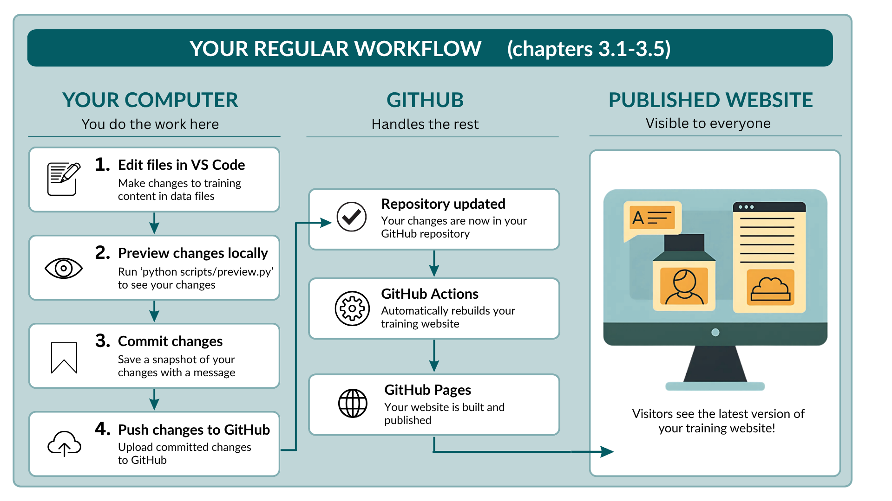
This chapter assumes you have done the one-time setup in Set up your training.
3.1 Open your training
Each time you start working, open your repository in VS Code and make sure you have the latest version.
Open VS Code. It usually reopens the repository you worked on last.
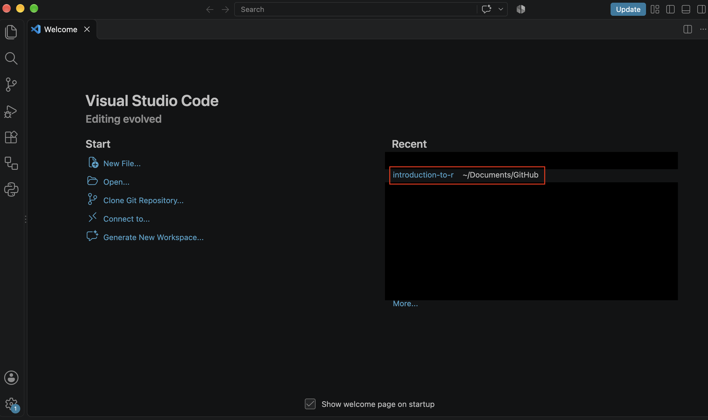
If not, choose File → Open Recent, or File → Open Folder… and select your repository folder.
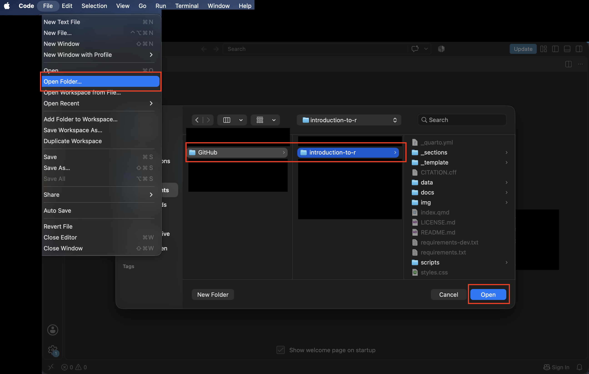
Get the latest version. If you work together with others, they may have uploaded changes since you last worked. In the bottom-left corner of VS Code, click the circular arrows next to the branch name (Synchronize Changes). This downloads their changes to your computer.
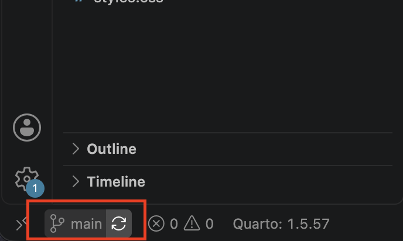
Which part of your website are you working on?
The bottom-left corner of VS Code also shows the branch you are working on. Your repository keeps each part of your training website in its own branch:
main: the training landing page.
release- followed by four digits, for example release-2605: one training instance in May 2026. In your template copy, it will say release-0000
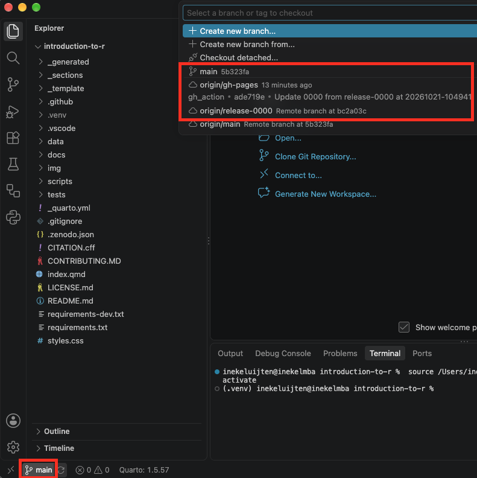
Before you start editing, check that you are on the branch you want to change. For your first change below, stay on main.
Done when: your repository is open in VS Code, and the bottom-left corner shows the branch you want to work on.
3.2 Preview your website
A preview shows your website in your web browser while you work on it, before anything is published. The preview runs on your own computer, so only you can see it. This lets you check every change before your collaborators or participants see it.
To start the preview, open a terminal (Terminal → New Terminal, see Open a terminal) and run:
python scripts/preview.py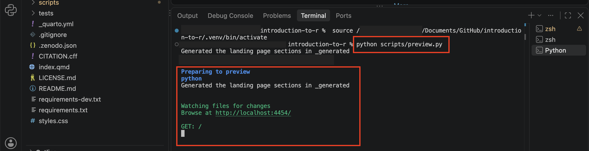
Quarto now builds your website. After a few seconds, it opens in your web browser.
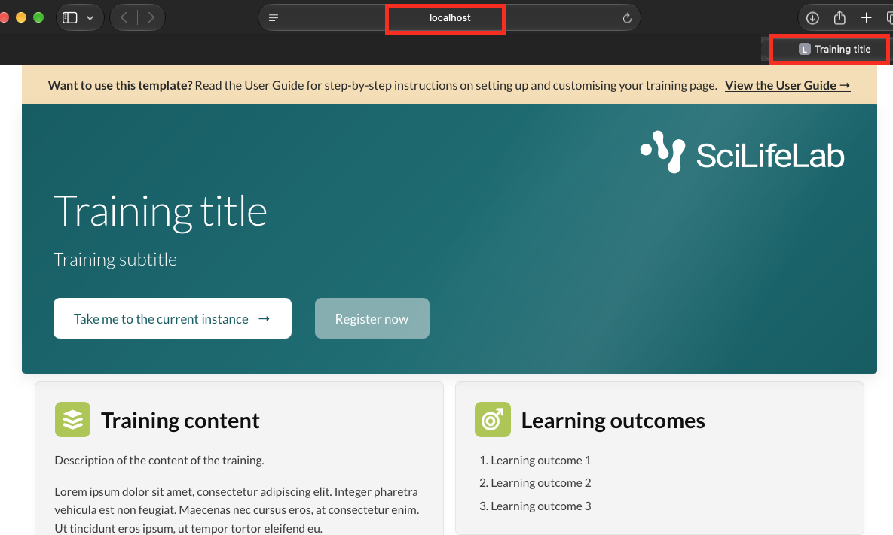
If it doesn’t open by itself, copy the address shown in the terminal, for example http://localhost:4268/, and paste it into your browser.
Keep the preview running while you work. Each time you save a file (Cmd+S (macOS) or Ctrl+S (Windows and Linux)), the preview updates by itself.
- To run other commands while the preview is running, open a second terminal with Terminal → New Terminal. The terminal running the preview is busy.
- To stop the preview when you are done, click in the terminal where it runs and press Ctrl+C.
When a page file (ending in .qmd) is open in VS Code, you can also click the Preview button in the top-right corner of the editor.
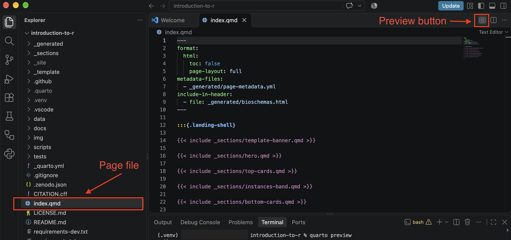
The website then opens inside VS Code. To see it in your browser instead, click Open in Browser.
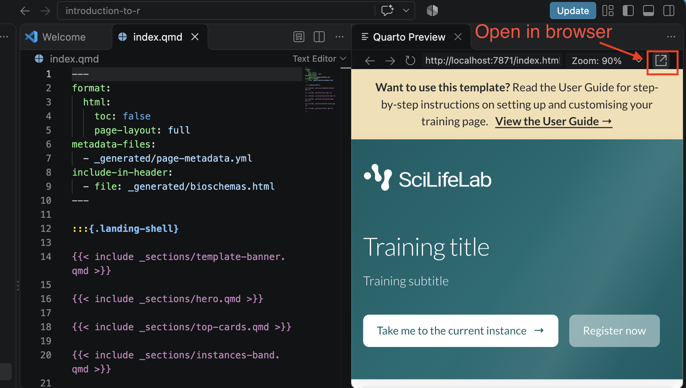
Done when: your website is open in your browser.
3.3 Make a change
Almost everything on your website comes from the files in the data folder: the title, dates, team, schedule, and so on. You change your website by changing these files, without touching any code.
How these files are organised is explained in Repository structure. For now, we focus on making one change and publishing it, so you can practice the whole process from start to finish.
As a first change, try changing the title of your training:
- In the Explorer panel, open the
datafolder and clickcourse.yml.
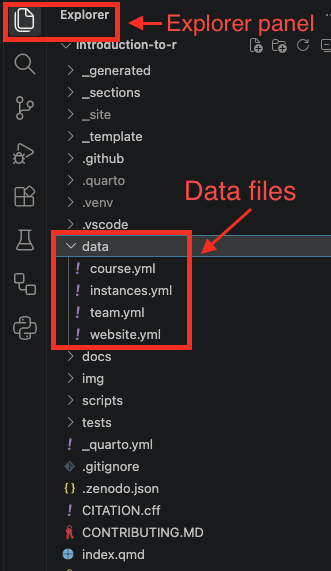
Scroll down a bit and find the line:
title: "Training title"Change the text between the quotation marks to your training’s title, for example:
title: "Introduction to R"
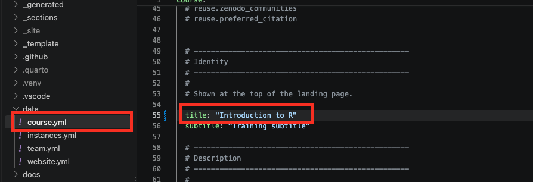
- Save the file with Cmd+S (macOS) or Ctrl+S (Windows and Linux).
The new title now appears at the top of the website preview in your browser.
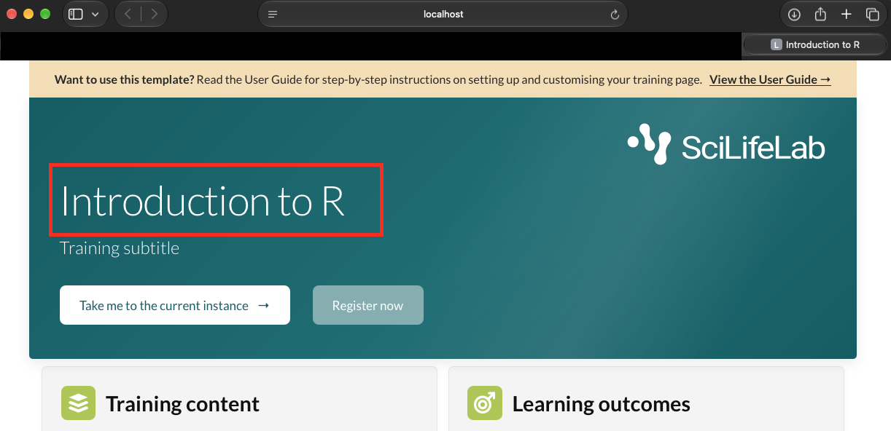
The data files are very sensitive to layout! Keep the quotation marks, and keep the indentation at the start of each line exactly as it is. If the preview shows an error after you save, check the file layout first. The lines starting with # are explanations: they don’t appear on the website.
Done when: the preview shows your new title.
3.4 Commit and push your changes
Your change is now saved on your computer, but nobody else can see it yet. Publishing it takes two steps, both in VS Code’s Source Control panel:
- Commit: save a version of your changes, with a short description of what you changed. Each commit is kept, so you can always see what changed and when.
- Push: upload your commits to GitHub. GitHub then updates your website automatically.
Click the Source Control icon on the left side of VS Code. Your changed files are listed under Changes.
You changed only
course.yml, but you probably see more files, for example files in the_generatedfolder. That’s expected: the template updates these files automatically from your data files, while the preview runs. Depending on what you change, you may also seeREADME.md,CITATION.cffor.zenodo.json. Always commit all changed files together.
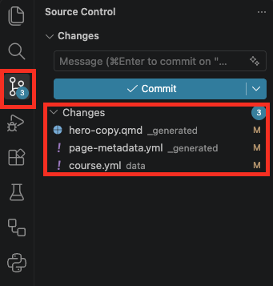
Hover over the word Changes and click the + next to it (Stage All Changes). This tells VS Code to include all changed files in your commit. They move to Staged Changes.
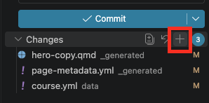
In the Message box at the top, describe your change, for example
Change the training title.
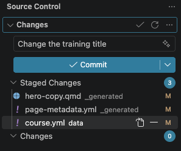
Click Commit.
Click Sync Changes to push your commit to GitHub.
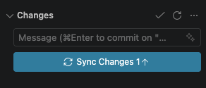
The first time you push, VS Code may ask you to sign in to GitHub. Follow the instructions in your browser, then return to VS Code.
If you want to make changes on several branches, commit and push your changes on one branch before you switch to another branch. Changes you haven’t committed yet move along with you to the other branch, where you might commit them by mistake.
Before you commit, you can undo all changes to a file: in the Source Control panel, hover over the file and click the curved arrow (Discard Changes). The file goes back to how it was at your last commit.
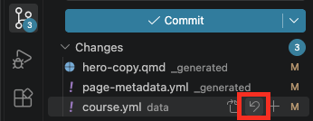
You only need to do this for the files you changed yourself, such as data/course.yml. The files the template updates automatically, for example in the _generated folder, go back by themselves: as soon as you discard your own change, the preview rebuilds them, and they disappear from the list after a few seconds.
This only works while the preview is running. If they are still listed, start the preview (python scripts/preview.py) and wait a few seconds.
Done when: the Source Control panel shows no more changes.
3.5 Check the published website
After you push your local changes to GitHub to be published, GitHub rebuilds your website by itself. This usually takes one or two minutes. You can follow it on GitHub:
Open your repository on GitHub and click the Actions tab.
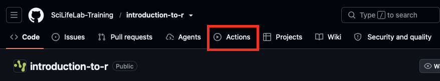
Wait until both of these show a green checkmark:
- deploy-landing (or deploy-instance, when you changed a training instance): builds your website;
- pages build and deployment: publishes it.
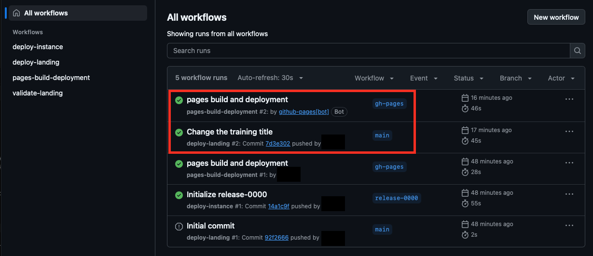
A yellow dot means it is still running.
Open your website with the link under About on your repository’s main page, see About link.
Still seeing the old version? Wait a minute and refresh the page. Browsers sometimes show an older copy for a short while.
A red cross in the Actions tab means something went wrong. Click it to see the error message, or see the cheat sheet below.
Done when: your published website shows your change.
3.6 Cheat sheet
Every time you work on your training, follow these steps in this order.
| To… | Where | What to do | What you should see |
|---|---|---|---|
| 1. Open your training repository | VS Code | Open VS Code. If your repository isn’t open, choose File → Open Recent | Your files in the Explorer panel on the left |
| 2. Get the latest version | VS Code, bottom-left corner | Click the circular ‘sync changes’ arrows next to the branch name | Your collaborators’ changes appear in your files |
| 3. Check the branch | VS Code, bottom-left corner | Read the branch name: main for the landing page, release-YYMM for a training instance | The branch you want to change |
| 4. Start the preview | Terminal (Terminal → New Terminal) | Type python scripts/preview.py and press Enter |
Your website opens in your browser |
| 5. Make your changes | Explorer panel | Open a file, usually in the data folder. Change only the text after the colon, and save with Cmd+S or Ctrl+S |
The preview updates by itself after a few seconds |
| 6. Stage your changes | Source Control panel (left side) | Hover over Changes and click + to stage all changed files, including files you didn’t change yourself | The files move to Staged Changes |
| 7. Commit | Source Control panel | Type a short description in Message and click Commit | The Sync Changes button appears |
| 8. Push | Source Control panel | Click Sync Changes | No more changes listed |
| 9. Check | GitHub, Actions tab | Wait for two green checkmarks | Your change on the published website |
| 10. Stop the preview | Terminal running the preview | Press Ctrl+C | The terminal accepts commands again |
3.7 If something goes wrong
| What you see | What it means | What to do |
|---|---|---|
The terminal line doesn’t start with (.venv) |
The environment is switched off | Open a new terminal. If that doesn’t help, run source .venv/bin/activate (Windows: .venv\Scripts\activate) |
| command not found: python | The environment is switched off | Same as above |
| The preview shows an error after you saved a data file | The file’s layout is broken | Check the quotation marks and the spaces at the start of the lines you changed |
| Sync Changes asks you to sign in | VS Code isn’t connected to GitHub yet | Follow the sign-in steps in your browser |
| A red cross in the Actions tab | Building the website failed | Click it to read the error message; it usually names the data file and the field to fix |
| The website still shows the old version | Publishing isn’t finished, or your browser shows an old copy | Wait a minute, then refresh the page |
| You changed something by mistake (not committed yet) | — | Source Control panel: hover over the file and click the curved arrow (Discard Changes) |